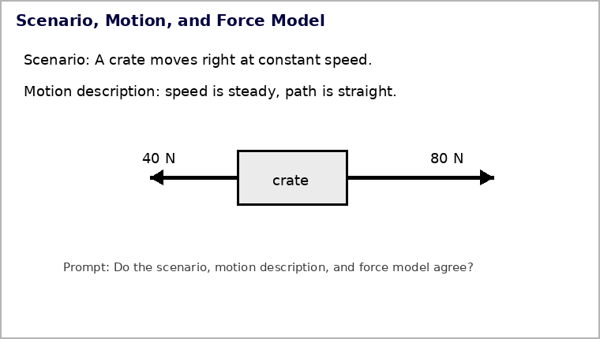

Unit 1.5 · Activity 1 · Modeling Forces in the Real WorldProblem 1
Problem 1
DOK 1
1. What information should you know about an object before deciding which forces to draw on it?
Unit 1.5 · Activity 1 · Modeling Forces in the Real WorldSolution 1
Solution 1
DOK 1
1. What information should you know about an object before deciding which forces to draw on it?
Work / rationale: Identify the chosen object and the real objects or fields interacting with it. Those interactions determine which forces belong on the force model.
Unit 1.5 · Activity 1 · Modeling Forces in the Real WorldProblem 2
Problem 2
DOK 1
2. How does arrow direction in a force model relate to the direction of the force?
Unit 1.5 · Activity 1 · Modeling Forces in the Real WorldSolution 2
Solution 2
DOK 1
2. How does arrow direction in a force model relate to the direction of the force?
Work / rationale: The arrow points in the direction of the force acting on the chosen object.
Unit 1.5 · Activity 1 · Modeling Forces in the Real WorldProblem 3
Problem 3
DOK 1
3. What does it mean for a force model to be balanced?
Unit 1.5 · Activity 1 · Modeling Forces in the Real WorldSolution 3
Solution 3
DOK 1
3. What does it mean for a force model to be balanced?
Work / rationale: The vector sum of all forces is zero, so the net force is zero.
Unit 1.5 · Activity 1 · Modeling Forces in the Real WorldProblem 4
Problem 4
DOK 1
4. What does a nonzero net force imply about motion?
Unit 1.5 · Activity 1 · Modeling Forces in the Real WorldSolution 4
Solution 4
DOK 1
4. What does a nonzero net force imply about motion?
Work / rationale: The object’s velocity is changing in speed, direction, or both.
Unit 1.5 · Activity 1 · Modeling Forces in the Real WorldProblem 5
Problem 5
DOK 1
5. Name one common force-model mistake involving motion arrows or inertia.
Unit 1.5 · Activity 1 · Modeling Forces in the Real WorldSolution 5
Solution 5
DOK 1
5. Name one common force-model mistake involving motion arrows or inertia.
Work / rationale: Example: drawing a force arrow just because the object is moving, or drawing “inertia” as a force. Force arrows must represent real interactions.
Unit 1.5 · Activity 1 · Modeling Forces in the Real WorldProblem 6
Problem 6
DOK 2
6. Use the scenario/motion/force-model image. Determine whether all three representations agree and identify the exact evidence for your decision.

Unit 1.5 · Activity 1 · Modeling Forces in the Real WorldSolution 6
Solution 6
DOK 2
6. Use the scenario/motion/force-model image. Determine whether all three representations agree and identify the exact evidence for your decision.
Work / rationale: No. The scenario and motion description say constant straight-line speed, which requires zero net force. The force model shows 80 N right and 40 N left, a 40-N net force right, so the force model conflicts with the motion description.
Unit 1.5 · Activity 1 · Modeling Forces in the Real WorldProblem 7
Problem 7
DOK 2
7. A person stands still on a floor. Build a force model in words by naming each main force, its source, and its direction.
Unit 1.5 · Activity 1 · Modeling Forces in the Real WorldSolution 7
Solution 7
DOK 2
7. A person stands still on a floor. Build a force model in words by naming each main force, its source, and its direction.
Work / rationale: Weight from Earth acts downward. The floor’s support/normal force acts upward. Because the person is standing still with no other vertical forces, those forces are equal in magnitude.
Unit 1.5 · Activity 1 · Modeling Forces in the Real WorldProblem 8
Problem 8
DOK 2
8. A crate moves left at constant speed while friction and an applied force act horizontally. What must be true about the horizontal vector sum?
Unit 1.5 · Activity 1 · Modeling Forces in the Real WorldSolution 8
Solution 8
DOK 2
8. A crate moves left at constant speed while friction and an applied force act horizontally. What must be true about the horizontal vector sum?
Work / rationale: The horizontal vector sum must be zero. The applied force and friction must be equal in magnitude and opposite in direction.
Unit 1.5 · Activity 1 · Modeling Forces in the Real WorldProblem 9
Problem 9
DOK 2
9. A cart has 30 N right and 50 N left. It is currently moving right. Describe how its motion can change consistently with the force model.
Unit 1.5 · Activity 1 · Modeling Forces in the Real WorldSolution 9
Solution 9
DOK 2
9. A cart has 30 N right and 50 N left. It is currently moving right. Describe how its motion can change consistently with the force model.
Work / rationale: The net force is 20 N left. While the cart is still moving right, that leftward net force can make it slow down; if the force continues long enough, it can stop and then begin moving left.
Unit 1.5 · Activity 1 · Modeling Forces in the Real WorldProblem 10
Problem 10
DOK 2
10. A hanging plant basket is supported by two angled chains at rest. Explain why neither chain has to point straight upward for the combined tension to balance the weight.
Unit 1.5 · Activity 1 · Modeling Forces in the Real WorldSolution 10
Solution 10
DOK 2
10. A hanging plant basket is supported by two angled chains at rest. Explain why neither chain has to point straight upward for the combined tension to balance the weight.
Work / rationale: Each chain’s tension has an upward component. The horizontal components can cancel each other while the upward components add to balance the basket’s weight, so neither individual chain must point straight upward.
Unit 1.5 · Activity 1 · Modeling Forces in the Real WorldProblem 11
Problem 11
DOK 3
11. Two students analyze a cart moving straight at constant speed. Student A draws a forward force because the cart moves forward. Student B draws equal forward and backward forces from identified interactions. Evaluate both models and defend the stronger one.
Unit 1.5 · Activity 1 · Modeling Forces in the Real WorldSolution 11
Solution 11
DOK 3
11. Two students analyze a cart moving straight at constant speed. Student A draws a forward force because the cart moves forward. Student B draws equal forward and backward forces from identified interactions. Evaluate both models and defend the stronger one.
Work / rationale: Student B has the stronger model. Constant straight-line speed means zero net force, and force arrows must come from real interactions. Student A cannot add a forward force merely because the cart moves forward.
Unit 1.5 · Activity 1 · Modeling Forces in the Real WorldProblem 12
Problem 12
DOK 3
12. A force diagram and motion description disagree. Develop a repeatable critique process: identify the object, check interactions, combine vectors, compare with motion, and revise. Apply that process briefly to a box shown with 70 N right and 20 N left but described as constant-speed motion.
Unit 1.5 · Activity 1 · Modeling Forces in the Real WorldSolution 12
Solution 12
DOK 3
12. A force diagram and motion description disagree. Develop a repeatable critique process: identify the object, check interactions, combine vectors, compare with motion, and revise. Apply that process briefly to a box shown with 70 N right and 20 N left but described as constant-speed motion.
Work / rationale: A repeatable check is: identify the object, list real interactions, combine the force vectors, compare the resulting net force with the stated motion, and revise the inconsistent representation. Here 70 N right and 20 N left give 50 N right, which conflicts with constant-speed straight motion. Balance the forces or change the motion description to changing motion.
Unit 1.5 · Activity 1 · Modeling Forces in the Real WorldProblem 13
Problem 13
DOK 1
13. A force diagram should model forces acting on
one chosen object
every object in the room
only moving objects
only the ground
the motion path
Unit 1.5 · Activity 1 · Modeling Forces in the Real WorldSolution 13
Solution 13
DOK 1
13. A force diagram should model forces acting on
one chosen object
every object in the room
only moving objects
only the ground
the motion path
Answer:A. one chosen object.
Rationale: A force diagram isolates one chosen object so every arrow can be interpreted as a force acting on that same object.
Unit 1.5 · Activity 1 · Modeling Forces in the Real WorldProblem 14
Problem 14
DOK 1
14. A force arrow should come from
a real interaction
the object’s velocity
the object’s inertia
a guess about motion
the diagram title
Unit 1.5 · Activity 1 · Modeling Forces in the Real WorldSolution 14
Solution 14
DOK 1
14. A force arrow should come from
a real interaction
the object’s velocity
the object’s inertia
a guess about motion
the diagram title
Answer:A. a real interaction.
Rationale: Force arrows represent real interactions—such as gravity, contact, tension, or friction—not the object’s velocity or its inertia.
Unit 1.5 · Activity 1 · Modeling Forces in the Real WorldProblem 15
Problem 15
DOK 2
15. Which force set is balanced?
40 N right and 40 N left
40 N right and 10 N left
20 N up and 5 N down
15 N right and 15 N right
30 N down only
Unit 1.5 · Activity 1 · Modeling Forces in the Real WorldSolution 15
Solution 15
DOK 2
15. Which force set is balanced?
40 N right and 40 N left
40 N right and 10 N left
20 N up and 5 N down
15 N right and 15 N right
30 N down only
Answer:A. 40 N right and 40 N left.
Rationale: The two 40 N forces are equal and opposite, so they cancel and the horizontal net force is zero.
Unit 1.5 · Activity 1 · Modeling Forces in the Real WorldProblem 16
Problem 16
DOK 2
16. Which force set is unbalanced?
12 N up and 12 N down
18 N left and 18 N right
25 N right and 10 N left
7 N up + 7 N down
30 N left + 30 N right
Unit 1.5 · Activity 1 · Modeling Forces in the Real WorldSolution 16
Solution 16
DOK 2
16. Which force set is unbalanced?
12 N up and 12 N down
18 N left and 18 N right
25 N right and 10 N left
7 N up + 7 N down
30 N left + 30 N right
Answer:C. 25 N right and 10 N left.
Rationale: The horizontal forces do not cancel: 25 N right − 10 N left = 15 N right, so the set is unbalanced.
Unit 1.5 · Activity 1 · Modeling Forces in the Real WorldProblem 17
Problem 17
DOK 2
17. A nonzero net force means the object’s
motion is changing
motion must stop immediately
mass is changing
weight is zero
inertia disappears
Unit 1.5 · Activity 1 · Modeling Forces in the Real WorldSolution 17
Solution 17
DOK 2
17. A nonzero net force means the object’s
motion is changing
motion must stop immediately
mass is changing
weight is zero
inertia disappears
Answer:A. motion is changing.
Rationale: A nonzero net force produces acceleration, meaning the object’s velocity changes in speed, direction, or both.
Unit 1.5 · Activity 1 · Modeling Forces in the Real WorldProblem 18
Problem 18
DOK 2
18. A leftward net force on an object moving right is consistent with
slowing while moving right
constant rightward velocity
speeding up rightward
zero change in motion
no forces acting
Unit 1.5 · Activity 1 · Modeling Forces in the Real WorldSolution 18
Solution 18
DOK 2
18. A leftward net force on an object moving right is consistent with
slowing while moving right
constant rightward velocity
speeding up rightward
zero change in motion
no forces acting
Answer:A. slowing while moving right.
Rationale: A leftward net force while the object moves right gives acceleration opposite the motion, which is consistent with the object slowing down while still moving right.
Unit 1.5 · Activity 1 · Modeling Forces in the Real WorldProblem 19
Problem 19
DOK 3
19. Which critique best fixes an “inertia force” arrow?
Remove it; inertia is a property, and replace it only with actual interaction forces if present.
Reverse it.
Make it longer.
Rename it velocity.
Add a second inertia arrow.
Unit 1.5 · Activity 1 · Modeling Forces in the Real WorldSolution 19
Solution 19
DOK 3
19. Which critique best fixes an “inertia force” arrow?
Remove it; inertia is a property, and replace it only with actual interaction forces if present.
Reverse it.
Make it longer.
Rename it velocity.
Add a second inertia arrow.
Answer:A. Remove it; inertia is a property, and replace it only with actual interaction forces if present.
Rationale: Inertia is a property of matter, not an interaction, so it should not appear as a force arrow. Only actual interaction forces belong on the diagram.
Unit 1.5 · Activity 1 · Modeling Forces in the Real WorldProblem 20
Problem 20
DOK 3
20. A diagram shows unequal horizontal forces but the text says constant speed in a straight line. What should be revised?
Either make the horizontal forces balance or change the motion description to changing motion.
Nothing; all representations agree.
Remove gravity only.
Add an inertia force.
Change the object’s mass only.
Unit 1.5 · Activity 1 · Modeling Forces in the Real WorldSolution 20
Solution 20
DOK 3
20. A diagram shows unequal horizontal forces but the text says constant speed in a straight line. What should be revised?
Either make the horizontal forces balance or change the motion description to changing motion.
Nothing; all representations agree.
Remove gravity only.
Add an inertia force.
Change the object’s mass only.
Answer:A. Either make the horizontal forces balance or change the motion description to changing motion.
Rationale: Constant speed in a straight line requires zero net force. Unequal horizontal forces contradict that motion description, so either the force model or the motion description must be revised.